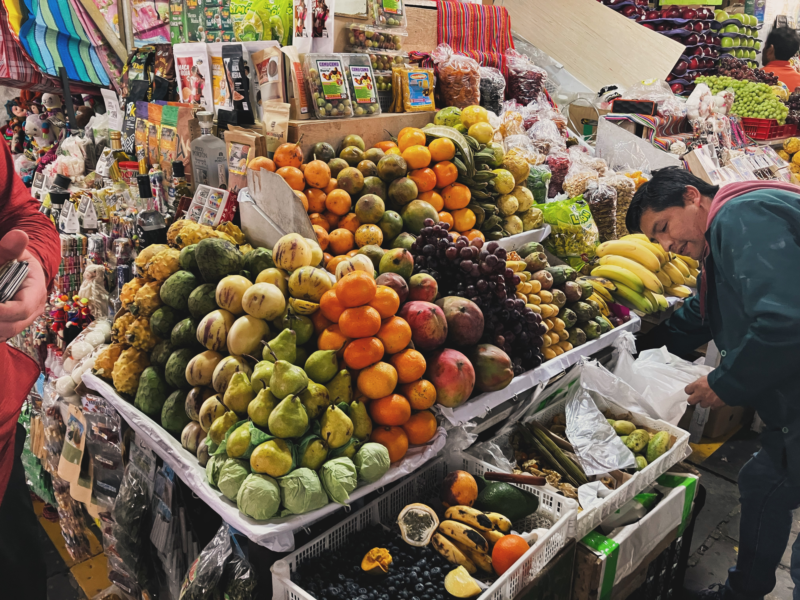
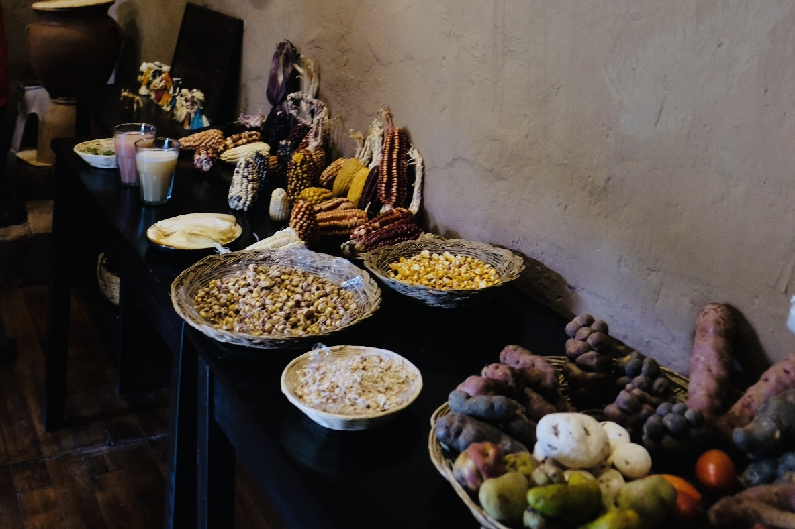

Top 10 Things to Do in Cusco
Nov 2, 2025 | By CuscoWalkingTours
Discover the top 10 must-see sights in Cusco, hidden gems, and tips for an unforgettable walking tour experience.
Read MoreTips, guides, and insider information from a local guide in Cusco.

Nov 2, 2025 | By CuscoWalkingTours
Discover the top 10 must-see sights in Cusco, hidden gems, and tips for an unforgettable walking tour experience.
Read More
Nov 2, 2025 | By CuscoWalkingTours
Learn about the must-try traditional dishes in Cusco, from street food to local favorites during your walking tour.
Read More